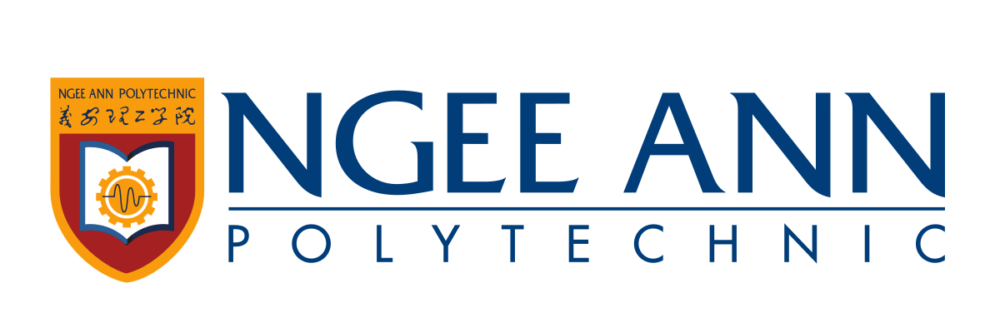
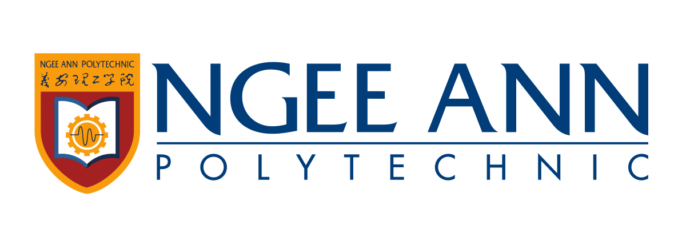
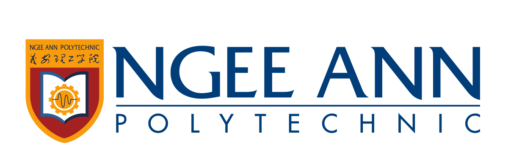
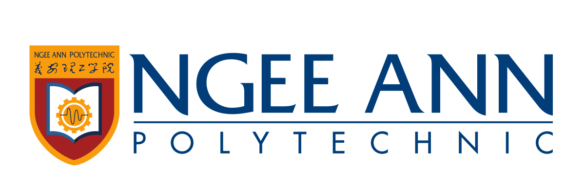

For my educational journey thus far, i went to Henry Park Primary School ( Left Image ) for my primary education, Queensway Secondary School ( Center Image ) for secondary education and am currently studying in Ngee Ann Polytechnic ( Right Image ) for tertiary education.